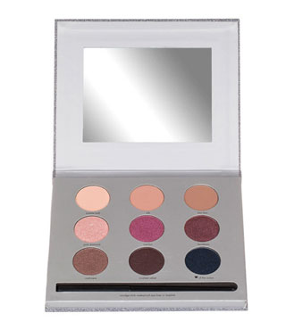
시작은 요 Stila Sparkle luxe eye shadow로 부터..^^;;
세일할떄 15파운드정도에 구매한건데
정 가운데 Marilyn / 바로왼쪽 Pink Diamond빼고는
전혀 사용하지 않아서
큰케이스 싫어 & 따로 분리해서 갖고다니고 싶다
- 라고 막연히 생각중
갖고있는 MAC 아이섀도우 빈 케이스가 생각났당
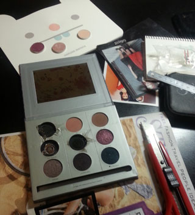
왕 충동적으로 해체시작
이미 돌이킬수 없쒀;;;
생각보다 분해는 쉬웠음 :D
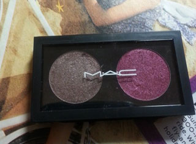
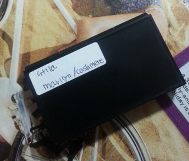
우왕 사이즈 딱 맞아 +_+
뒷면에는 라벨로 이름적어놓기
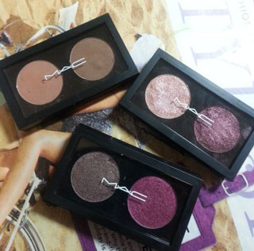
...신이나서 케이스 2개 더 구입
두개 더 만들어놨다
살아남은 색상은 위에부터 순서대로
silk / bon bon
Pink Diamond / Bordeaux
Marilyn / cashmere
케이스값이랑 섀도우값이 비슷해지는
엄청 바보같은 상황이 되어버렸는데
우선 쪼매난게 네모네모해서 뿌듯해하는중^^;;;
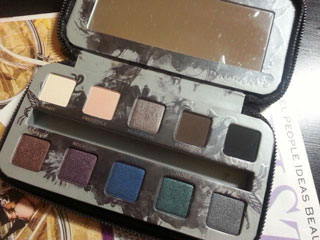
단순변덕에 의해서 시작된 일인데
의외로 느므 맘에들어서 또다시 일을 벌리기 시작;;;
Urban Decay 스모키드 팔레트
여기서도 사용하는 색은 Rock star / Barlust 딱두개^^;;;
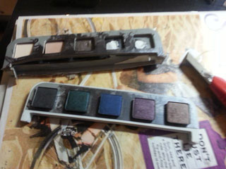
칼로 슥삭슥삭
팔레트 구조가 일케 생겼구만 신기하다
이러믄서 해체^^;;;
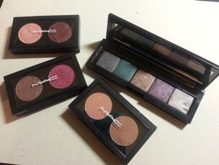
살아남은 색은
Asphalt / Loaded / Barlust / Rock star / Mushroom
일케 정확히 반
케이스는 슈에무라꺼인데 사이즈는 살짝 안맞는당
4개 들어가는 케이스인데 5개 넣은후에도 덜그럭덜그럭^^;;
하지만 전체 사이즈가 확 줄어서 만족중^^;;;
씐나게 작업하고 나니
어쩐지 안해도 될 삽질에 돈을 왕창쓴거 같지만(케이스구입비;;;)
마음에들어욤 ㅎㅎㅎㅎㅎ
깜장네모네모야~~쪼맨한게귀여워~~이러믄서
혼자 좋아하고 있습니다^^;;;;(←;;;;)
+ 그외 잡다한 사진 :D
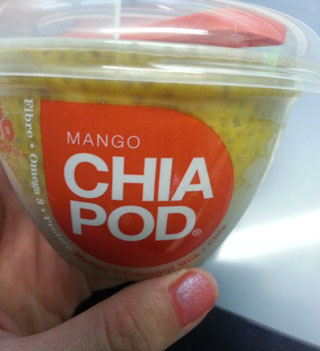
지하철앞에서 나눠준 아침대용품 같은거
정말 이렇게 맛이 없을수가 ㅡㅡ;;;;
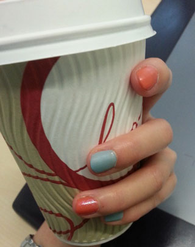
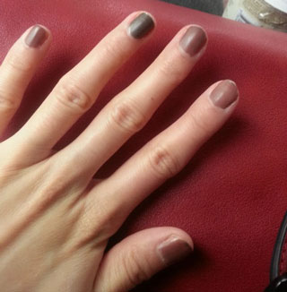
최근 빠져있는 Matte nail :D
올해 겨울은 별로 춥지도 않고 눈한번 안내리고 지나가는듯
날도 따수워 지고 봄이오네용
나들이 가고싶어라~~